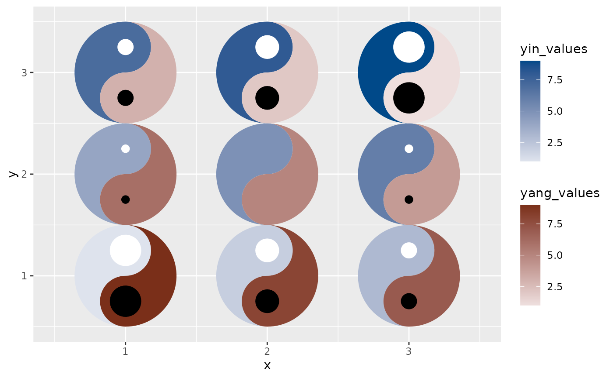
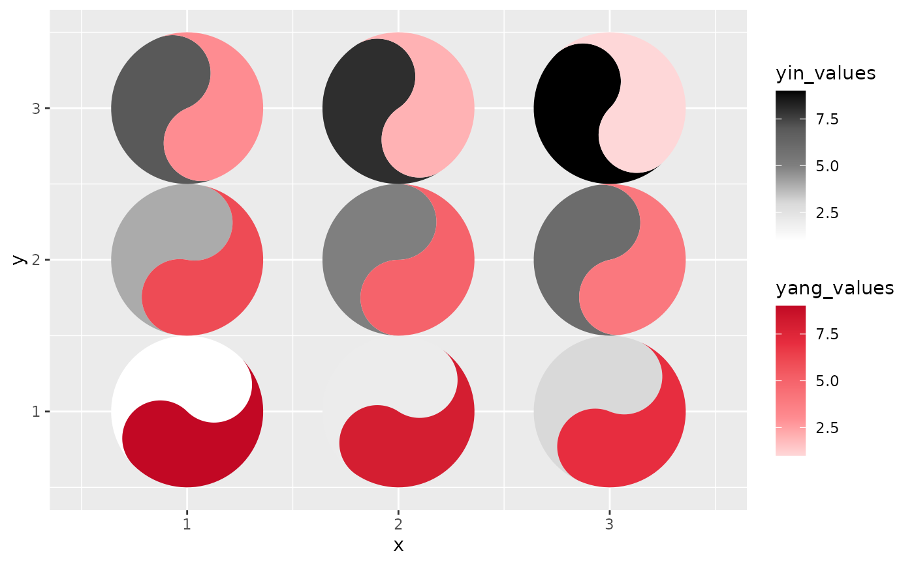

The taichi geom turns each cell of a heatmap-like grid into a taichi
(yin-yang) diagram. The two interlocking "fish" of the diagram use luminance
to show the values from two data sources on the same plot, so four
dimensions of data can be expressed at once: the x and y
position of every taichi symbol plus the yin and yang values
that fill its two halves. With the optional eyes enabled and mapped to data
(see eyes, yin_eye_size, yang_eye_size), a single glyph
can carry up to six dimensions.
Usage
geom_taichi(
yin,
yang,
yin_name = NULL,
yang_name = NULL,
yin_colors = c("gray100", "gray85", "gray50", "gray35", "gray0"),
yang_colors = c("#FED7D8", "#FE8C91", "#F5636B", "#E72D3F", "#C20824"),
palette = NULL,
yin_scale = NULL,
yang_scale = NULL,
angle = NULL,
eyes = FALSE,
yin_eye_size = 0.15,
yang_eye_size = 0.15,
yin_eye_colour = NULL,
yang_eye_colour = NULL,
explicit = c("none", "difference", "ratio", "log_ratio", "z"),
explicit_channel = c("eye_size", "angle", "border", "radius"),
explicit_range = NULL,
radius_exponent = 0.57,
interactive = FALSE,
tooltip = NULL,
data_id = NULL,
onclick = NULL,
data_id_by = c("cell", "fish", "source"),
shared_limits = FALSE,
shared_legend = FALSE,
width = NULL,
height = NULL,
alpha = NA,
na.rm = FALSE,
colour = NA,
linewidth = 0.1,
linetype = 1,
show.legend = NA,
key_glyph = NULL,
...
)Arguments
- yin
The unquoted column name (or a literal string naming a column) for the yin (dark) fish of the taichi symbol. To pass a name held in a variable, use
.data[[nm]]or!!rlang::sym(nm)— a bare variable would be mapped as a constant fill, exactly as it would be insideaes().- yang
The unquoted column name (or a literal string naming a column) for the yang (light) fish of the taichi symbol, as
yin.- yin_name
The label name (in quotes) for the legend of the yin rendering. Default is
NULL(uses the column name).- yang_name
The label name (in quotes) for the legend of the yang rendering. Default is
NULL(uses the column name).- yin_colors
A color vector, usually as hex codes, for the yin fish fill. Used as a gradient for continuous data and as a discrete palette for factor/character data. Ignored if
yin_scaleis provided.- yang_colors
A color vector, usually as hex codes, for the yang fish fill. Used as a gradient for continuous data and as a discrete palette for factor/character data. Ignored if
yang_scaleis provided.- palette
A matched pair of ramps to use instead of
yin_colors/yang_colors: the name of ataichi_palette()preset ("balanced","diverging","viridis_pair","brewer_pair","greyscale_safe","default") or a list withyinandyangcolour vectors, such as the result oftaichi_palette_pair(). DefaultNULL, which keeps the package's historical grey / seal-red pair. See the Palettes section.- yin_scale
An optional fill scale for the yin fish: either a ready scale object or a scale constructor function (e.g.
ggplot2::scale_fill_viridis_d). Overrides auto-detection. It must govern a fill aesthetic; a scale for another aesthetic (sayscale_colour_viridis_c) is rejected with an error rather than quietly leaving the fish on the default gradient.- yang_scale
An optional fill scale for the yang fish, as
yin_scale.- angle
Rotation of each glyph in degrees, counter-clockwise: either a single number or an unquoted column name (one angle per cell). A mapped column must be numeric.
- eyes
Logical. If
TRUE, draws the classic taichi eyes (dots), each centred in its fish's head. DefaultFALSE, preserving the plain v0.1.0 look.- yin_eye_size, yang_eye_size
Size of each eye as a proportion of the glyph radius: a constant (default 0.15) or an unquoted data column to encode a variable (see the Eyes section for the rescaling rule).
- yin_eye_colour, yang_eye_colour
Colour of each eye dot: a constant, an unquoted data column containing colour strings, or
NULL(the default) to take the colour from the theme — the yin eye from the theme'spaperand the yang eye from itsink, which is white and black on every light theme and swaps on a dark one. On ggplot2 before 4.0.0, where themes cannot set geom defaults,NULLfalls back to the literal "white" and "black".- explicit
Which relationship between the two sources to compute and show as a third channel:
"none"(the default),"difference","ratio","log_ratio"or"z". See the Explicit encoding section, andtaichi_summary()for the definitions.- explicit_channel
Where the computed statistic goes:
"eye_size"(the default),"angle","border"or"radius". Ignored whenexplicit = "none". The chosen channel cannot also be set by hand — e.g.explicit_channel = "angle"together with anangleargument is an error rather than a silent override.- explicit_range
Two numbers giving the output range of
explicit_channel, orNULL(the default) for that channel's own sensible range.- radius_exponent
Only used by
explicit_channel = "radius": the exponent relating the statistic to the glyph radius.0.5is strict area scaling; the default0.57is the cartographic apparent-magnitude (Flannery) compensation, which makes larger symbols slightly larger than the geometry alone would give because readers systematically underestimate the area ratio between big and small circles.- interactive
If
TRUE, draw the fish (and their eyes) as ggiraph grobs carryingtooltip,data_idandonclick, so thatggiraph::girafe()turns the plot into a widget. Needs the ggiraph package. DefaultFALSE, which renders exactly as before and does not touch ggiraph. See the Interactivity section.- tooltip, data_id, onclick
Optional unquoted data columns overriding the interactive attributes. Used only when
interactive = TRUE; by defaulttooltipis built from the two values, their difference and the cell's coordinates,data_idfromdata_id_by, andonclickis empty.- data_id_by
Scope of the default
data_id, i.e. what one hover highlights:"cell"(both fish of that glyph; the default),"fish"(one fish), or"source"(every fish of that source, in every cell). Ignored whendata_idis supplied.If
TRUEand both sources are of the same type (both continuous, or both discrete), the two auto-built fill scales share common limits — the union range (or union of levels) ofyinandyang— so equal values read as equal ink. Explicitlimitspassed through...take precedence. As of 0.3.0 the shared limits are also pushed into a customyin_scale/yang_scalethat does not set limits of its own, so a supplied binned scale shares breaks too. DefaultFALSE.If
TRUE, treats the two sources as directly comparable: impliesshared_limits = TRUE, paints both fish withyin_colors, and shows a single legend (the yang guide is dropped). Unlessyin_nameis supplied, the legend is titled "yin/yang". DefaultFALSE. This is the perceptually correct choice whenever the two sources really are directly comparable: one ramp means equal values are equal ink by construction, with no palette pairing to get wrong (see the Palettes section). The cost is that the sources are then told apart only by their position inside the glyph — yin is the top bulb, yang the bottom. When a customyang_scaleis supplied it is used as given, so making the two palettes agree is then your business; the duplicate yang guide is dropped either way.- width, height
Width and height of each cell. Typically omitted.
- alpha
Alpha transparency for the fish fills. A single value for the whole layer (see the Styling section).
- na.rm
If
TRUE, silently removes rows with missing values.- colour
Outline colour of the fish. A single value for the whole layer (see the Styling section).
- linewidth
Outline width of the fish (in mm). Replaces the deprecated
sizeaesthetic of ggtaichi 0.1.0. A single value for the whole layer (see the Styling section).- linetype
Outline linetype of the fish. A single value for the whole layer (see the Styling section).
- show.legend
Logical. Should the layer be included in the legend?
- key_glyph
The legend key glyph, passed on to
layer(). Both fish default to a small taichi with their own half filled (seedraw_key_taichi()); pass"rect"for the plain ggplot2 rectangles of earlier versions. Keys only appear for discrete fills — a continuous fill gets a colourbar.- ...
Additional arguments passed to both auto-built fill scales (e.g., shared
limitsorna.value). Because they go to both, an argument that suits only one kind of scale will be rejected by the other whenyinandyangare of different types — for instance a numericlimitsdraws ggplot2's "Continuous limits supplied to discrete scale" warning from the discrete fish. For per-fish scale options, supplyyin_scale/yang_scaleinstead. The scale argumentsgeom_taichi()fills in itself —name,valuesandcolors/colours— are not accepted here; useyin_name/yang_nameandyin_colors/yang_colors.
Value
A ggtaichi_plot object: the two fish layers plus the fill
scales they need, ready to be added to a ggplot
with +. It is not a plot on its own.
Details
A seventh channel, angle, rotates the glyph, and explicit
adds an eighth that is computed rather than mapped: the relationship
between the two sources, shown as a third channel of the same mark. See
the Explicit encoding section.
Discrete and continuous fills
geom_taichi() inspects the plot data at + time. A numeric
yin / yang column gets a continuous
scale_fill_gradientn built from yin_colors /
yang_colors; a factor, character, or logical column (including
computed expressions such as factor(week)) gets a discrete
scale_fill_manual whose palette is interpolated from
the same color vectors. With the default vectors the discrete palette skips
the palest end of the ramp so that no category is invisible on a white
panel; an explicitly supplied color vector is used as-is. Supply
yin_scale / yang_scale to override the automatic choice
entirely.
The automatic discrete palette samples a sequential ramp, which
implies that the levels are ordered. That suits an ordered factor and
overstates an unordered one: if your categories have no natural order,
supply a qualitative palette through yin_colors / yang_colors
or a scale through yin_scale / yang_scale, so the fill does
not assert a ranking the data does not have.
Because the choice is made when the layer is added, replacing the plot's
data afterwards keeps the scales picked for the original data. Swapping in
data of the same types is fine; if the new yin / yang columns
are of the other kind, ggplot2 reports a "Discrete value supplied to
a continuous scale" (or the reverse) at draw time — rebuild the plot rather
than substituting its data.
Eyes
eyes = TRUE draws the classic taichi dots, each sitting in its own
fish's head: the yin eye in the top bulb, the yang eye in the bottom bulb.
The size and colour arguments accept either a constant or an (unquoted)
data column, so the eyes can encode up to two further variables. A mapped
eye-size column is rescaled to radii between 0.05 and 0.3 of the glyph
radius, unless all its non-zero values already lie in (0, 0.5], in
which case they are used directly as radius proportions. Cells whose eye
size is NA or 0 are drawn without an eye, so a column may
mix proportions with zeros to suppress individual eyes. A column whose
values are all equal gets the midpoint radius, 0.175.
Styling
alpha, colour, linewidth and linetype are
layer-wide constants here. Each has a concrete default, so
geom_taichi() always passes it to both fish layers as a parameter,
and a parameter takes precedence over an inherited mapping: a plot-level
aes(linewidth = ...) (or alpha, colour,
linetype) has no effect on the glyphs. To drive one of those from a
column, build the layers yourself with geom_yin_fish() /
geom_yang_fish(), which take all four as ordinary
aesthetics.
width and height behave differently, because they default to
NULL and are forwarded only when you actually supply them: a
plot-level aes(width = ...) does size the cells per row. So
the data-driven channels of geom_taichi() are yin,
yang, angle, the two eyes, and width / height
via aes().
Missing values
A fish whose fill value is NA is painted in the scale's
na.value colour (pass e.g. na.value = "transparent" through
... to change it), while na.rm = TRUE silently drops rows
with missing positions.
Time on an axis
Putting time on x makes each row of the grid a time series drawn as
a row of discrete glyphs, and the series is then encoded in fill
rather than in position — so slope is not encoded at all, and a reader
infers a trend by comparing the shade of neighbouring cells. That is a poor
substitute for a line. Use a taichi grid for the question which
series differ from each other, and where; put a line chart or a horizon
plot beside it for what is the trend.
Explicit encoding
Two fish sharing one position is a superposition comparison. It is
very good at "are these similar?" and "which is bigger here?", and it
cannot answer "by how much?" — that needs the relationship itself to be
computed and drawn. explicit does exactly that, turning one of
"difference" (yin - yang), "ratio",
"log_ratio" or "z" into a third channel of the glyph. The
statistics are the ones taichi_summary() tabulates, including
its rule that a ratio of a non-positive value is NA rather than
Inf.
explicit_channel chooses where it goes:
"eye_size"The default, and the tidiest: the eyes already exist and are visually subordinate to the fills, so the two fish keep carrying the two sources while eye size carries the gap between them. A big eye reads as "look here", which is what a big gap means. Cells where the two sources agree exactly get no eye at all, so a plain glyph means agreement. Implies
eyes = TRUE."angle"The most accurate option. Direction and angle are read far more precisely than shading, so encoding the gap as tilt makes it legible to a precision the fills can never reach: an upright glyph means the two sources agree and the lean shows which way and how far. The cost is the symbol's upright orientation, which is why it is a choice rather than the default.
"border"Outline width. Unobtrusive, and it composes with everything else, but the least precise of the four. Because the default
colourisNA— no outline at all — this channel gives the outline a visible colour unless you setcolouryourself."radius"Glyph size, scaled by area (radius proportional to the square root of the statistic) so that the eye's area-based reading is the correct one. Cells where the sources agree shrink; use it when the interesting thing is where they disagree.
explicit_range sets the channel's output range; each channel has a
sensible default (c(0, 0.3) of the glyph radius for eyes,
c(-45, 45) degrees for angle, c(0, 1) mm for the border,
c(0.4, 1) of the cell for radius). The statistic is rescaled across
the whole layer, so the mapping is comparable between facets.
geom_taichi_diff() draws the same statistic as a diverging
heatmap when the glyph is not the right chart for the question, and
taichi_summary() returns it as a table.
Palettes
The two ramps are compared against each other, so they need to be matched:
if one spans a wider luminance range than the other then equal values do
not read as equal ink and one fish looks heavier wherever the data says the
sources are level. The default grey-and-red pair is not matched
(run taichi_check_palette() with no arguments to see the
numbers) and is kept only for continuity. palette selects a
matched pair instead — "balanced" is the recommended one — and
also accepts the output of taichi_palette_pair(). It is a
shorthand for setting yin_colors and yang_colors together,
so passing both is an error.
Interactivity
Fill is the least accurate channel there is, which is why an interactive
version of a taichi grid is not a gimmick: hovering supplies the exact
values without giving up the encoding. With interactive = TRUE the
layers emit ggiraph grobs, and the plot becomes a widget when it is
passed to ggiraph::girafe():
p <- ggplot(cafes_tg, aes(week, neighbourhood)) +
geom_taichi(yin = matcha, yang = espresso, interactive = TRUE)
ggiraph::girafe(ggobj = p)The default tooltip carries both values, their difference, and the cell's
coordinates. data_id_by decides what a hover highlights:
"cell" (the default) lights up both fish of one glyph,
"fish" one fish at a time, and "source" every fish of one
source at once — which turns the superposition display into a
single-source display for as long as the pointer rests there, letting a
reader decompose the comparison instead of doing it in their head.
tooltip, data_id and onclick take a data column to
override any of it.
The static rendering is unchanged: with interactive = FALSE the
package does not touch ggiraph at all, and with it TRUE the
same geometry is drawn, only in grobs that carry the extra attributes.
plotly is not and will not be supported — ggplotly() cannot
translate custom grobs, which is exactly what this package draws.
Examples
library(ggplot2)
# taichi with numeric fills
data <- data.frame(x = rep(c(1, 2, 3), 3),
y = rep(c(1, 2, 3), each = 3),
yin_values = 1:9,
yang_values = 9:1)
ggplot(data, aes(x, y)) +
geom_taichi(yin = yin_values,
yang = yang_values)
 # categorical (discrete) fills are detected automatically
data$yin_class <- rep(c("low", "mid", "high"), 3)
ggplot(data, aes(x, y)) +
geom_taichi(yin = yin_class,
yang = yang_values)
# categorical (discrete) fills are detected automatically
data$yin_class <- rep(c("low", "mid", "high"), 3)
ggplot(data, aes(x, y)) +
geom_taichi(yin = yin_class,
yang = yang_values)
 # classic eyes, rotation, and data-driven eye sizes
ggplot(data, aes(x, y)) +
geom_taichi(yin = yin_values,
yang = yang_values,
eyes = TRUE,
yin_eye_size = yang_values,
angle = 45)
# classic eyes, rotation, and data-driven eye sizes
ggplot(data, aes(x, y)) +
geom_taichi(yin = yin_values,
yang = yang_values,
eyes = TRUE,
yin_eye_size = yang_values,
angle = 45)
 # a matched palette pair, and the gap between the sources as eye size
ggplot(data, aes(x, y)) +
geom_taichi(yin = yin_values,
yang = yang_values,
palette = "balanced",
shared_limits = TRUE,
explicit = "difference")
# a matched palette pair, and the gap between the sources as eye size
ggplot(data, aes(x, y)) +
geom_taichi(yin = yin_values,
yang = yang_values,
palette = "balanced",
shared_limits = TRUE,
explicit = "difference")

# the same gap as tilt: the most accurate channel available
ggplot(data, aes(x, y)) +
geom_taichi(yin = yin_values,
yang = yang_values,
explicit = "difference",
explicit_channel = "angle")

# tooltips carry the exact values; needs ggiraph to view
p <- ggplot(data, aes(x, y)) +
geom_taichi(yin = yin_values, yang = yang_values,
interactive = TRUE, data_id_by = "source")
if (requireNamespace("ggiraph", quietly = TRUE)) {
# ggiraph::girafe(ggobj = p)
}
#> NULL